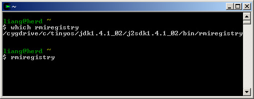

<tos>/myApps where <tos> is
the location of your TinyOS installation (for Windows users, it
is usually /opt/tinyos-1.x).
If you're unsure what it is, type echo
$TOSROOT or look in /etc/profile.d/tinyos.sh.<tos>/myApps.
The NesC portion of Agilla is located in <tos>/myApps/Agilla.
From here on, this directory is <agilla>.<tos>/tools/java.
Agilla's agent injector is now in <tos>/tools/java/edu/wustl/mobilab/agilla./etc/profile. # Agilla Aliases alias cda="cd $TOSROOT/myApps/Agilla" alias cdaj="cd $TOSROOT/tools/java/edu/wustl/mobilab/agilla" alias ri="java -Djava.security.policy=java.policy edu.wustl.mobilab.agilla.AgentInjector \ -comm COM1:57600 -d &" alias ri_sim="java -Djava.security.policy=java.policy edu.wustl.mobilab.agilla.AgentInjector \ -comm tossim-serial -d &" alias ri_nc="java -Djava.security.policy=java.policy edu.wustl.mobilab.agilla.AgentInjector \ -nc -d &" alias ri_rmi="java -Djava.security.policy=java.policy edu.wustl.mobilab.agilla.AgentInjector \ -comm RMI:localhost -d &" alias mj="cd $TOSROOT/tools/java/edu/wustl/mobilab/agilla; javac *.java" alias riall_m2="cd $TOSROOT/myApps/Agilla; gawk -f installer_m2.awk" alias riall_mz="cd $TOSROOT/myApps/Agilla; gawk -f installer_mz.awk"
These aliases allow you to quickly compile and install Agilla. Here is a brief description of each:
- cda - change directory to Agilla's NesC code
- cdaj - change directory to Agilla's Java code (the agent injector)
- ri - run injector on COM1. The programming board must be connected to the specified serial port. Be sure to set the correct COM port!
- ri_sim - run injector, simulation. Connects to the TOSSIM running locally. See debugging for more information on how to use this.
- ri_nc - runs the injector without connecting to anything. Allows you to compile an agent into NesC code, which can then be simulated. See debugging for more information on how to use this.
- mj - make java, recompiles the Agent Injector without re-generating the message files
- riall_m2 - reinstall all mica2 - runs the script that reinstalls Agilla's NesC code on all mica2 motes
- riall_mz - reinstall all micaz - runs the script that reinstalls
Agilla's NesC code on all micaz motes
For additional convenience, I recommend adding the following additional aliases to the profile file for navitgating around TinyOS in general:
alias cdj="cd $TOSROOT/tools/java" alias cdtos="cd $TOSROOT" alias cdxbowapps="cd $TOSROOT/contrib/xbow/apps" alias cdapps="cd $TOSROOT/apps" alias cdmyapps="cd $TOSROOT/myApps" alias runsf_pc="cd $TOSROOT/tools/java; java net.tinyos.sf.SerialForwarder \ -comm tossim-serial &" alias runsf_com1="cd $TOSROOT/tools/java; java net.tinyos.sf.SerialForwarder \ -comm serial@COM1:mica2 &"
<tos>/tools/make. Customize the
radio frequency, group address and serial port number defined
within it. The group address should be unique to you. The serial
port number is the port that your mote programming board is connected
to.<tos>/tos/system/Reset.h and
add || defined (PLATFORM_MICAZ) to the end of line 47. This allows the user to remote reset the motes.
<agilla>/installer_m2.awk or <agilla>/installer_mz.awk!
Specifically, change the programming board and COM port settings
on line 20 to fit your setup.For Mica2 motes, type:
riall_m2 For MicaZ motes, type:
riall_mzFollow the on-screen instructions. Besure to select 'y' when prompted to recompile for the first time. You should see something like:
If you did not add the Agilla aliases to your profile, you can manually install agilla by typing the following:
cda make [platform] reinstall.[id][programming board],[port]
where
[platform]is
the target platform (e.g., mica, mica2, mica2dot, or micaz), [id] is
the mote ID, [programming
board] is the programming board (e.g., MIB510), and [port] is
the serial port the programming board is attached to (e.g., COM1). cdaj make
This will take some time since it has to use MIG to generate all of the message files.
If you get the following error:
rmic -d ../../../../../.. edu.wustl.mobilab.agilla.rmi.agentInjector.AgentInjectorServerSide java.lang.Exception: compiler exited with status: 1 at gnu.java.rmi.rmic.CompilerProcess.compile(java.lang.String) (/usr/lib/libgcj.so.5.0.0) at gnu.java.rmi.rmic.RMIC.compile(java.lang.String) (/usr/lib/libgcj.so.5.0.0) at gnu.java.rmi.rmic.RMIC.processClass(java.lang.String) (/usr/lib/libgcj.so.5.0.0) at gnu.java.rmi.rmic.RMIC.run() (/usr/lib/libgcj.so.5.0.0) at gnu.java.rmi.rmic.RMIC.main(java.lang.String[]) (/usr/lib/libgcj.so.5.0.0) at gnu.java.rmi.rmic.CompilerProcess.compile(java.lang.String) (/usr/lib/libgcj.so.5.0.0) ...4 moreGo into the base java directory (e.g.,
/opt/tinyos-1.x/tools/java) and type
$ rmic edu.wustl.mobilab.agilla.rmi.remoteTupleSpace.RemoteTupleSpaceServerSide $ rmic edu.wustl.mobilab.agilla.rmi.agentInjector.AgentInjectorServerSideto generate the stub files.
<tos>/tools/java. - Open a new command window, and type
rmiregistryas shown below:

Note: If you get ajava.rmi.RemoteException: failed to export: class gnu.java.rmi.dgc.DGCImplerror, be sure your path is set to point to the correct version of rmiregistry. On a Windows system running Cygwin, it is usually/cygdrive/c/tinyos/jdk1.4.1_02/j2sdk1.4.1_02/bin/rmiregistry.
- In the original command window, type
ri. You should see:

Note: If you do not have the aliases configured, you can start the AgentInjector manually by typing:
java -Djava.security.policy=java.policy edu.wustl.mobilab.agilla.AgentInjector \ -comm COM1:57600 -d &
First hitCtrl+rwhile looking at the motes. All motes should blink all 3 LEDs on for 1 second indicating that they are resetting. If this does not occur, check to ensure mote (0,0) is correctly seated on the programming board and hit the programming board's reset button.
You are now ready to inject mobile agents into the sensor network!